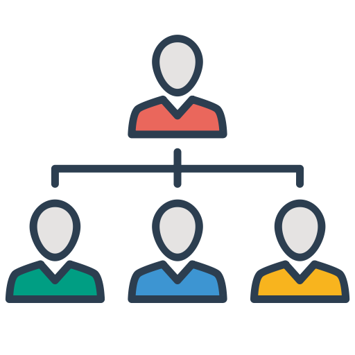

| 
| 
| 
| 
|  | |
|---|---|---|---|---|---|---|
MY ORGANIZATION
Appointed as exco for discipline and security in Jawatankuasa Perwakilan Kolej Kompleks Tok Gajah (2018/2019)
Kem Kepimpinan Pelajar
|
| |
we are required to join this camp for 3 days 2 nights at a homestay in melaka. Here we can learn to be a good leader. In addition, we also need to make a proposal paper for high-impact programs.
Care To Share


My experience when being one of the JPK Kompleks Tok Gajah session 18/19 at UiTM jengka, Pahang. Many things that have been learned while participating in this JPK include making events, increasing confidence in dealing with the public, helping other students who need our help.
Among the many programs we do, one of the most impressive programs in my heart is the Care to share Program in the Chow Kit Road Book (BJCK). this program, we spend time with homeless children and also renovate the library at their school. we also educate BJCK students who have problems in reading together mastering the techniques of recognizing syllables and spelling. at the end of the program, we became grateful for life and what we had.